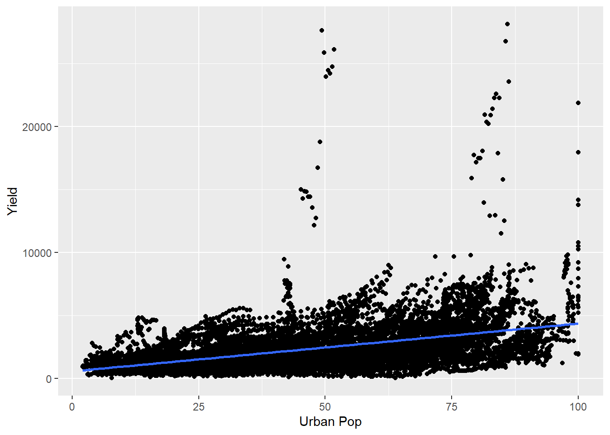

Lors du TD5 nous avons profité de nos trois heures pour prendre le temps de faire le point de l’avancement de chaque groupe. Les problématiques rencontrées portaient principalement sur :
J’ai pu, au cas par cas, suggérer quelques pistes d’avancement et nous avons défini un agenda commun d’objectifs à atteindre durant la semaine 6 asynchrone :
Pour faciliter ce travail, je vous propose sur cette page quelques éléments de réponses aux questions que vous vous poserez probablement.
#Comment rédiger sa question de recherche ? Pour rappel, c’est un point que nous avons abordé lors de la séance 3. Pour faire court, la question commence par “Comment” et finit par un point d’interrogation. On cherche donc à expliquer les facteurs qui influencent le phénomène étudié. Dans la question de recherche, on peut mentionner clairement ces facteurs, ou bien laisser la question ouverte.
Exemples: Comment la part du capital dans le revenu national influence-t-elle les inégalités ? Comment la part de population urbaine d’un État influe-t-elle sur la productivité de son agriculture ? Comment l’ouverture d’un pays au commerce mondial est-elle déterminée par la structure de son économie ?
#Comment écrire son modèle économétrique ? ##De l’hypothèse au modèle économétrique On cherche à comprendre comment différents facteurs (les variables explicatives -> X) déterminent un phénomène (la variable expliquée -> Y).
Le modèle prend la forme : \(Y_i = \beta_0 + \beta_1 \times X_{1i} + \beta_2 \times X_{2i} + \epsilon_i\)
Dans ce modèle, on explique le phénomène Y par deux facteurs X1 et X2.
Ca vous fait sans doute une belle jambe - car ça ne répond probablement pas à la question que vous vous posiez. J’en conviens. Alors comment passer d’une hypothèse à une modèle économétrique ?
Le plus simple est sans doute de sortir du descriptif pour aborder du concret. Admettons que dans les exemples de question de recherche précédents, je me penche sur le lien entre part de la population urbaine et productivité agricole.
Mon hypothèse et que lorsque la population urbaine augmente, au moins deux canaux feront que la productivité agricole se devra d’augmenter :
Voici deux hypothèses, qui je suis certain vous paraissent imparfaites ! C’est juste. On pourrait en faire plein d’autres - et elles resteraient probablement incomplètes. Alors comment tester nos conjectures ? Et bien en utilisant des données disponibles ! Avant de se pencher sur le mécanisme à l’oeuvre, il faut d’abord regarder si l’hypothèse centrale d’un lien positif entre part de la population urbaine et rendement agricole tient la route.
Le modèle économétrique est donc :
\(rendement\_agricole_i = \beta_0 + \beta_1 \times part\_urbaine_i + \epsilon_i\)
Je suis donc passé d’une hypothèse à une équation toute simple: notre modèle économétrique.
##Combien de facteurs intégrer dans son modèle ?
Dans mon exemple précédent, je n’ai considéré qu’un seul facteur affectant la productivité agricole. Evidémment, dans la réalité, il ne fait aucun doute que d’avantage de facteurs impactent la productivité agricole. Alors combien et pourquoi intégrer d’autres facteurs ? Trois considérations à prendre en compte pour vous apporter une réponse complète :
Un premier modèle théorique pourrait donc être : \(rendement\_agricole_i = \beta_0 + \beta_1 \times part\_urbaine_i + \beta_2 \times PIB\_hab_{i} + \beta_3 \times fertilité\_sols_i + \beta_4 \times pluviométrie_i + \beta_5 \times surface\_agricole\_utile_i + \epsilon_i\)
Le premier modèle empirique que j’estimerai sera cependant : \(rendement\_agricole_i = \beta_0 + \beta_1 \times part\_urbaine_i + \epsilon_i\)
#Combien d’observations intégrer dans ma base de données ? Nous parlions justement du nombre d’observation. Comme nous venons de le voir, plus vous considérez de facteurs dans votre modèle, plus vous avez intérêt à intégrer un grand nombre d’observations.
Mais il existe une raison plus essentielle qui doit vous pousser à intégrer le plus grand nombre d’observations possibles : la variance de vos estimateurs. Rappelez-vous la formule de la variance vue en cours: \(\hat{\sigma}^2 = \frac{\sum_i (y_i - \hat{y}_i)^2}{N-K-1}\) Plus vous allez avoir d’observations (N), plus votre variance va être réduite. Pourquoi est-ce une bonne chose ? Car cela signifie que votre estimation sera plus précise ! Et qui dit précision dit inférence statistique. Ce qui nous intéresse au fond n’est pas tant le coefficient que vous obtenez, mais plus de savoir s’il y a des chances que sa vraie valeur soit en réalité de zéro. C’est la fameuse significativité statistique des résultats à laquelle je fais ici référence. Si vous souhaitez un rappel plus poussé sur ce point, je vous renvoie aux diapositives 91 à 100 de votre leçon 4 sur les modèles bivariés.
#Un exemple d’analyse
Je vous propose de démontrer mon propos avec un modèle sur les rendements agricoles et la part de la population urbaine. J’ai un peu triché car j’ai téléchargé les données nécessaires à mon analyse sur le site de la Banque Mondiale.
Mes deux variables sont :
Je cherche à estimer ce modèle : \(rendement\_agricole_i = \beta_0 + \beta_1 \times part\_urbaine_i + \epsilon_i\)
Dans ce qui suit, je montre tout mon protocole, du chargement de données à l’estimation du modèle. Si vous avez attéri içi dans le but d’avoir plus de précision concernant cette histoire de variance et de précision, aller directement à la section correspondante.
##Chargement des données Tout d’abord, je charge mes packages et j’initialise le chemin d’accès à mes données.
## Warning: package 'tidyverse' was built under R version 3.6.3## -- Attaching packages ------------------------------------------------------------- tidyverse 1.3.0 --## v ggplot2 3.2.1 v purrr 0.3.3
## v tibble 2.1.3 v dplyr 0.8.3
## v tidyr 1.0.0 v stringr 1.4.0
## v readr 1.3.1 v forcats 0.4.0## -- Conflicts ---------------------------------------------------------------- tidyverse_conflicts() --
## x dplyr::filter() masks stats::filter()
## x dplyr::lag() masks stats::lag()# 01. PACKAGES ------------------------------------------------------------
# install.packages('tidyverse')
library(tidyverse)
# 02. CHEMIN D'ACCES AUX FICHIERS -----------------------------------------
# ctrl + Majuscule + R: windows -> créer un chapite
# cmd + Shift + R
chemin = "D:/OneDrive - sciencespo.fr/Suivi Descartes/Projet/donnees/brut"
setwd(chemin)À présent je charge les deux bases de données:
urba = read.csv(file = "API_SP.URB.TOTL.IN.ZS_DS2_en_csv_v2_1622878.csv",
skip = 4)
agri = read.csv(file = "API_AG.YLD.CREL.KG_DS2_en_csv_v2_1624305.csv",
skip = 4)Les quatres premières lignes du fichier source ne contiennent pas d’information et je demande donc à la fonction read.csv() de les sauter. Regardons à quoi ressemble ces bases:
On constate donc que ce sont des données longitudinales : pour une variable donnée et par pays, nous pouvons suivre son évolution par année. C’est chouette, mais ça ne correspond pas au format de donnée que l’on souhaite. En effet, on cherche à avoir des données structurées comme on l’a présenté lors du TD 4. Pour reprendre le vocabulaire que l’on utilisait alors, c’est comme si les deux bases téléchargées sur le site de la Banque Mondiale étaient “larges”. C’est à dire qu’elles prennent pour identifiants le pays et l’indicateur (rendement ou population urbaine), tandis que le facteur est l’année. Or, on souhaiterait au contraire utiliser l’année et le pays comme identifiants et le rendement et la population urbaine comme facteurs.
Pour se faire on va se reporter à la méthode 2 du TD4. C’est à dire qu’on va d’abord réordonner les deux bases indépendemment avant de les assembler horizontalement.
Commençons.
##Réordonner et nettoyer les deux bases de données indépendemment. Pour obtenir des bases de données propre, je réalise deux opérations successives :
urba_clean = urba %>%
pivot_longer(cols = "X1960":"X2020",
names_to = "YEAR",
values_to = "Urban Pop") %>%
select("Country.Name","Country.Code","YEAR","Urban Pop")
agri_clean = agri%>%
pivot_longer(cols = "X1960":"X2020",
names_to = "YEAR",
values_to = "Yield") %>%
select("Country.Name","Country.Code","YEAR","Yield")Voyons ce que nous obtenons ainsi:
##Assembler les bases de données Il semblerait qu’il ne nous reste plus qu’à assembler les bases de données et nous pourrons procéder à l’analyse.
On va réaliser cette jonction en utilisant la fonction inner_join() présentée dans le TD4 dans la méthode 2. Notez que je supprime les pays/années qui ont une donnée manquante pour le rendement ou la population urbaine.
## Joining, by = c("Country.Name", "Country.Code", "YEAR")R nous indique que les bases ont été jointes, parfait !
Voici un extrait du résultat :
Passons à l’analyse.
##Analyse de la relation entre les variables Comment procéder à l’analyse ?
La première chose est dans doute de réaliser des statistiques descriptives de nos données.
###Statistiques descriptives On peut tout d’abord regarder combien d’observations on a par année:
Ce n’est pas terrible. Comment faire mieux ? Peut être en modifiant le nom des années qui ne semblent toutes avoir un ‘X’ devant et en effectuant une rotation des années sur l’axe de ‘X’.
base_final = base_final %>%
mutate(YEAR = str_remove(YEAR, "X"))
ggplot(base_final, aes(x= YEAR))+
geom_bar()+
theme(axis.text.x = element_text(angle = 90))On peut réaliser le même type de graph avec le nombre d’observations par Pays:
C’est un beau bazar. Bon, ce n’est par conséquent probablement pas la meilleur façon de visualiser cette information. On peut réaliser une table du nombre d’occurences plutôt.
##
## Afghanistan
## 57
## Albania
## 57
## Algeria
## 57
## American Samoa
## 0
## Andorra
## 0
## Angola
## 57
## Antigua and Barbuda
## 52
## Arab World
## 57
## Argentina
## 57
## Armenia
## 26
## Aruba
## 0
## Australia
## 57
## Austria
## 57
## Azerbaijan
## 26
## Bahamas, The
## 57
## Bahrain
## 0
## Bangladesh
## 57
## Barbados
## 57
## Belarus
## 26
## Belgium
## 18
## Belize
## 57
## Benin
## 57
## Bermuda
## 0
## Bhutan
## 57
## Bolivia
## 57
## Bosnia and Herzegovina
## 26
## Botswana
## 57
## Brazil
## 57
## British Virgin Islands
## 0
## Brunei Darussalam
## 57
## Bulgaria
## 57
## Burkina Faso
## 57
## Burundi
## 57
## Cabo Verde
## 57
## Cambodia
## 57
## Cameroon
## 57
## Canada
## 57
## Caribbean small states
## 57
## Cayman Islands
## 0
## Central African Republic
## 57
## Central Europe and the Baltics
## 57
## Chad
## 57
## Channel Islands
## 0
## Chile
## 57
## China
## 57
## Colombia
## 57
## Comoros
## 57
## Congo, Dem. Rep.
## 57
## Congo, Rep.
## 57
## Costa Rica
## 57
## Cote d'Ivoire
## 57
## Croatia
## 26
## Cuba
## 57
## Curacao
## 0
## Cyprus
## 57
## Czech Republic
## 25
## Denmark
## 57
## Djibouti
## 37
## Dominica
## 57
## Dominican Republic
## 57
## Early-demographic dividend
## 57
## East Asia & Pacific
## 57
## East Asia & Pacific (excluding high income)
## 57
## East Asia & Pacific (IDA & IBRD countries)
## 57
## Ecuador
## 57
## Egypt, Arab Rep.
## 57
## El Salvador
## 57
## Equatorial Guinea
## 0
## Eritrea
## 19
## Estonia
## 26
## Eswatini
## 57
## Ethiopia
## 25
## Euro area
## 57
## Europe & Central Asia
## 57
## Europe & Central Asia (excluding high income)
## 57
## Europe & Central Asia (IDA & IBRD countries)
## 57
## European Union
## 57
## Faroe Islands
## 0
## Fiji
## 57
## Finland
## 57
## Fragile and conflict affected situations
## 57
## France
## 57
## French Polynesia
## 0
## Gabon
## 57
## Gambia, The
## 57
## Georgia
## 26
## Germany
## 57
## Ghana
## 57
## Gibraltar
## 0
## Greece
## 57
## Greenland
## 0
## Grenada
## 57
## Guam
## 57
## Guatemala
## 57
## Guinea
## 57
## Guinea-Bissau
## 57
## Guyana
## 57
## Haiti
## 57
## Heavily indebted poor countries (HIPC)
## 57
## High income
## 57
## Honduras
## 57
## Hong Kong SAR, China
## 50
## Hungary
## 57
## IBRD only
## 57
## Iceland
## 0
## IDA & IBRD total
## 57
## IDA blend
## 57
## IDA only
## 57
## IDA total
## 57
## India
## 57
## Indonesia
## 57
## Iran, Islamic Rep.
## 57
## Iraq
## 57
## Ireland
## 57
## Isle of Man
## 0
## Israel
## 57
## Italy
## 57
## Jamaica
## 57
## Japan
## 57
## Jordan
## 57
## Kazakhstan
## 26
## Kenya
## 57
## Kiribati
## 0
## Korea, Dem. Peopleâ\200\231s Rep.
## 57
## Korea, Rep.
## 57
## Kosovo
## 0
## Kuwait
## 50
## Kyrgyz Republic
## 26
## Lao PDR
## 57
## Late-demographic dividend
## 57
## Latin America & Caribbean
## 57
## Latin America & Caribbean (excluding high income)
## 57
## Latin America & the Caribbean (IDA & IBRD countries)
## 57
## Latvia
## 26
## Least developed countries: UN classification
## 57
## Lebanon
## 57
## Lesotho
## 57
## Liberia
## 57
## Libya
## 57
## Liechtenstein
## 0
## Lithuania
## 26
## Low & middle income
## 57
## Low income
## 57
## Lower middle income
## 57
## Luxembourg
## 18
## Macao SAR, China
## 0
## Madagascar
## 57
## Malawi
## 57
## Malaysia
## 57
## Maldives
## 57
## Mali
## 57
## Malta
## 57
## Marshall Islands
## 0
## Mauritania
## 57
## Mauritius
## 57
## Mexico
## 57
## Micronesia, Fed. Sts.
## 27
## Middle East & North Africa
## 57
## Middle East & North Africa (excluding high income)
## 57
## Middle East & North Africa (IDA & IBRD countries)
## 57
## Middle income
## 57
## Moldova
## 26
## Monaco
## 0
## Mongolia
## 57
## Montenegro
## 12
## Morocco
## 57
## Mozambique
## 57
## Myanmar
## 57
## Namibia
## 57
## Nauru
## 0
## Nepal
## 57
## Netherlands
## 57
## New Caledonia
## 57
## New Zealand
## 57
## Nicaragua
## 57
## Niger
## 57
## Nigeria
## 57
## North America
## 57
## North Macedonia
## 25
## Northern Mariana Islands
## 0
## Norway
## 57
## Not classified
## 0
## OECD members
## 57
## Oman
## 57
## Other small states
## 57
## Pacific island small states
## 57
## Pakistan
## 57
## Palau
## 0
## Panama
## 57
## Papua New Guinea
## 57
## Paraguay
## 57
## Peru
## 57
## Philippines
## 57
## Poland
## 57
## Portugal
## 57
## Post-demographic dividend
## 57
## Pre-demographic dividend
## 57
## Puerto Rico
## 57
## Qatar
## 47
## Romania
## 57
## Russian Federation
## 26
## Rwanda
## 57
## Samoa
## 0
## San Marino
## 0
## Sao Tome and Principe
## 57
## Saudi Arabia
## 57
## Senegal
## 57
## Serbia
## 12
## Seychelles
## 0
## Sierra Leone
## 57
## Singapore
## 0
## Sint Maarten (Dutch part)
## 0
## Slovak Republic
## 25
## Slovenia
## 26
## Small states
## 57
## Solomon Islands
## 54
## Somalia
## 57
## South Africa
## 57
## South Asia
## 57
## South Asia (IDA & IBRD)
## 57
## South Sudan
## 6
## Spain
## 57
## Sri Lanka
## 57
## St. Kitts and Nevis
## 0
## St. Lucia
## 19
## St. Martin (French part)
## 0
## St. Vincent and the Grenadines
## 57
## Sub-Saharan Africa
## 57
## Sub-Saharan Africa (excluding high income)
## 57
## Sub-Saharan Africa (IDA & IBRD countries)
## 57
## Sudan
## 6
## Suriname
## 57
## Sweden
## 57
## Switzerland
## 57
## Syrian Arab Republic
## 57
## Tajikistan
## 26
## Tanzania
## 57
## Thailand
## 57
## Timor-Leste
## 57
## Togo
## 57
## Tonga
## 0
## Trinidad and Tobago
## 57
## Tunisia
## 57
## Turkey
## 57
## Turkmenistan
## 26
## Turks and Caicos Islands
## 0
## Tuvalu
## 0
## Uganda
## 57
## Ukraine
## 26
## United Arab Emirates
## 41
## United Kingdom
## 57
## United States
## 57
## Upper middle income
## 57
## Uruguay
## 57
## Uzbekistan
## 26
## Vanuatu
## 57
## Venezuela, RB
## 57
## Vietnam
## 57
## Virgin Islands (U.S.)
## 0
## West Bank and Gaza
## 23
## World
## 57
## Yemen, Rep.
## 57
## Zambia
## 57
## Zimbabwe
## 57Pour le coup, c’est presque trop précis. Difficile d’en tirer des conclusions.
On peut également regarder la moyenne des rendements, et la moyenne de la population urbaine :
## [1] 47.24018## [1] 2371.508Une analyse intéressante serait d’avoir une vision dynamique de cette moyenne: comment a-t-elle évoluée par année ? Pour ce faire, on peut créer une petite base qui va donner par année la moyenne des deux indicateurs :
base_annuelle = base_final %>%
group_by(YEAR) %>%
summarise(rendement = mean(Yield),
ville = mean(`Urban Pop`))
ggplot(base_annuelle, aes(y= rendement,
x=YEAR))+
geom_point()+
theme(axis.text.x = element_text(angle = 90))ggplot(base_annuelle, aes(y= ville,
x=YEAR))+
geom_point()+
theme(axis.text.x = element_text(angle = 90))On observe donc que les deux phénomènes que l’on souhaite étudier ont évolués dans la même direction. On peut également faire un graph qui croise ces deux données :
Il semblerait qu’il existe donc une association entre les deux phénomènes. On peut à présent revenir sur l’échantillon total et regarder comment cette relation se comporte.
###Analyse de la relation bivariée Dans la continuité de ce que l’on a fait jusqu’à présent, on peut réaliser un graph de nuage de points sur la relation entre les deux variables. J’y ajoute une ligne dont la pente est le coefficient de régression entre les deux variables.

On observe une association positive entre les deux variables. Cette observation est confirmée lorsque l’on estime les coefficients de régression avec la fonction lm() :
##
## Call:
## lm(formula = Yield ~ `Urban Pop`, data = base_final)
##
## Residuals:
## Min 1Q Median 3Q Max
## -3048.1 -913.5 -267.6 600.1 25188.2
##
## Coefficients:
## Estimate Std. Error t value Pr(>|t|)
## (Intercept) 579.04 34.73 16.67 <2e-16 ***
## `Urban Pop` 37.94 0.66 57.49 <2e-16 ***
## ---
## Signif. codes: 0 '***' 0.001 '**' 0.01 '*' 0.05 '.' 0.1 ' ' 1
##
## Residual standard error: 1660 on 11773 degrees of freedom
## Multiple R-squared: 0.2192, Adjusted R-squared: 0.2191
## F-statistic: 3305 on 1 and 11773 DF, p-value: < 2.2e-16#Qu’est-ce qui se passe lorsque l’échantillon diminue ? Je vais à présent vous montrer ce qu’il se passe lorsque l’on réduit l’échantillon à peau de chagrin.
Commençons par réduire l’échantillon à l’ensemble des pays, mais pour l’unique année 1970.
Regardons à présent ce qu’il se passe sur la variance de notre coefficient. La petite bande grise autour de la ligne de régression correspond à l’écart-type, c’est à dire la racine carrée de la variance. On ne l’observait pas dans le précédent graph, car elle était bien plus petite.
Si, de manière un peu plus rigoureuse, on estime le modèle avec la fonction lm(), on observe que l’écart-type augmente significativement.
##
## Call:
## lm(formula = Yield ~ `Urban Pop`, data = base_1970)
##
## Residuals:
## Min 1Q Median 3Q Max
## -1743.1 -533.7 -115.6 472.4 2823.4
##
## Coefficients:
## Estimate Std. Error t value Pr(>|t|)
## (Intercept) 799.965 109.227 7.324 6.56e-12 ***
## `Urban Pop` 20.897 2.506 8.340 1.46e-14 ***
## ---
## Signif. codes: 0 '***' 0.001 '**' 0.01 '*' 0.05 '.' 0.1 ' ' 1
##
## Residual standard error: 763.6 on 191 degrees of freedom
## Multiple R-squared: 0.2669, Adjusted R-squared: 0.2631
## F-statistic: 69.55 on 1 and 191 DF, p-value: 1.455e-14Si l’on pousse le vice un peu plus loin encore et que l’on ne se focalise plus que sur trois pays pour l’année 1970, on observe que l’écart-type explose.
base_1970_USA_BWA = base_1970 %>%
filter(Country.Code %in% c("BWA","USA","FRA"))
ggplot(base_1970_USA_BWA, aes(x= `Urban Pop`,
y=Yield))+
geom_point()+
geom_smooth(method = "lm")L’écart-type a ici tellement augmenté que la significativité des résultats s’en trouve à présent sensiblement amoindrie.
##
## Call:
## lm(formula = Yield ~ `Urban Pop`, data = base_1970_USA_BWA)
##
## Residuals:
## 1 2 3
## -6.823 176.175 -169.352
##
## Coefficients:
## Estimate Std. Error t value Pr(>|t|)
## (Intercept) -317.61 274.85 -1.156 0.4541
## `Urban Pop` 49.48 4.64 10.665 0.0595 .
## ---
## Signif. codes: 0 '***' 0.001 '**' 0.01 '*' 0.05 '.' 0.1 ' ' 1
##
## Residual standard error: 244.5 on 1 degrees of freedom
## Multiple R-squared: 0.9913, Adjusted R-squared: 0.9826
## F-statistic: 113.7 on 1 and 1 DF, p-value: 0.05952J’espère que cette demonstration empirique vous convaincra de ne pas trop restreindre la taille de votre échantillon.
#Comment faire pour comparer les coefficients entre pays ? Une autre question sur laquelle je souhaiterais m’attarder concerne la construction d’un modèle lorsque l’on souhaite comparer différents pays. Admettons que je veuille comparer le Botswana avec la France et les Etat-Unis. La tentation serait de construire trois bases de données distinctes et d’estimer la régression pour chaque pays séparement. Le problème c’est que l’on obtiendra ainsi des coefficients différents, mais il nous sera difficile de les comparer statistiquement.
Alors comment faire ? Tout simplement en assemblant toutes les données dans une même base et en intégrant dans le modèle des effet fixes et des interactions qui captureront respectivement l’effet propre à chaque pays sur le phénomène analysé et l’effet singulier dans chaque pays de l’augmentation du facteur explicatif.
Soyons plus clairs, passons à un exemple. Pour comparer le Botswana, les USA et la France sur le lien entre rendement agricole et population urbaine, je vous propose le modèle suivant : \(rendement\_agricole_i = \beta_0 + \beta_1 \times part\_urbaine_i + \beta_2 \times USA_i + \beta_3 \times FRA_i + \beta_4 \times USA_i \times part\_urbaine_i + \beta_5 \times USA_i \times part\_urbaine_i + \epsilon_i\)
Première observation, j’ai exclus le Botswana du modèle. Pourquoi ? Car si j’intègre la variable “BWA” alors nous aurons un problème de “multicolinéarité parfaite” entre les facteurs (diapositive 36 de votre CM 5 sur les régressions multiples). Cela implique que tout le modèle est basé sur la comparaison par rapport à la situation du Botswana. Je m’explique :
Ce modèle nous permet donc de comparer les résultats entre pays à partir d’un pays de référence ! Pas mal non ?
Mais à quoi correspondent ces variables USA et FRA ? Et bien ce sont les fameuses variables indicatrices que vous avez découvert diapositive 136 de la leçon 3 sur les modèles bivariés. Voyons comment la construire. USA prendra la valeur 1 quand l’observation correspondra à une valeur américaine et la valeur 0 autrement. Il en est de même pour la variable FRA.
base_analyse = base_final %>%
filter(Country.Code %in% c("BWA","USA","FRA")) %>% # Je ne garde que les données pour les trois pays
# Je crée une variable FRA qui prend une valeur en fonction de la valeur de Country.Code
mutate(FRA = ifelse(Country.Code == "FRA",1,0),
# Idem, USA prend la valeur 1 si Country.Code == 1, sinon elle prend la valeur 0
USA = ifelse(Country.Code == "USA",1,0))Voici le résultat :
On peut donc faire la régression que l’on souhaitait :
reg_pays = lm(Yield ~`Urban Pop`+USA + FRA + USA*`Urban Pop` + FRA*`Urban Pop` ,data = base_analyse)
summary(reg_pays)##
## Call:
## lm(formula = Yield ~ `Urban Pop` + USA + FRA + USA * `Urban Pop` +
## FRA * `Urban Pop`, data = base_analyse)
##
## Residuals:
## Min 1Q Median 3Q Max
## -1961.60 -214.61 -29.74 303.67 1365.65
##
## Coefficients:
## Estimate Std. Error t value Pr(>|t|)
## (Intercept) 326.775 127.055 2.572 0.011 *
## `Urban Pop` 1.280 3.051 0.419 0.675
## USA -28917.636 1574.914 -18.361 <2e-16 ***
## FRA -21066.057 1311.641 -16.061 <2e-16 ***
## `Urban Pop`:USA 437.730 20.786 21.059 <2e-16 ***
## `Urban Pop`:FRA 353.932 17.890 19.784 <2e-16 ***
## ---
## Signif. codes: 0 '***' 0.001 '**' 0.01 '*' 0.05 '.' 0.1 ' ' 1
##
## Residual standard error: 523.2 on 165 degrees of freedom
## Multiple R-squared: 0.9618, Adjusted R-squared: 0.9607
## F-statistic: 831.5 on 5 and 165 DF, p-value: < 2.2e-16Analysons ces résultats:
Urban Pop:USA et Urban Pop:FRA. Ils nous indiquent que l’association entre rendement agricole et augmentation d’1% de la population urbaine est positivement et significativement plus importante qu’au Botwsana. Ainsi, par rapport à l’augmentation observée au Botswana un pourcent de population urbaine supplémentaire aux USA est associé à 437 kg/hectare d’augmentation du rendement des céréales. De plus, cette différence est significativement différente de 0, avec un niveau de confiance de 99%.Reste une question : ces associations sont-elles causales ? (non) Sont-elles intéressantes ? (oui). Pourquoi ? À vous de me le dire…
Je vais m’arrrêter à ça pour aujourd’hui. Bonne semaine asynchrone à toutes et tous et au plaisir de vous retrouver en semaine 7 !